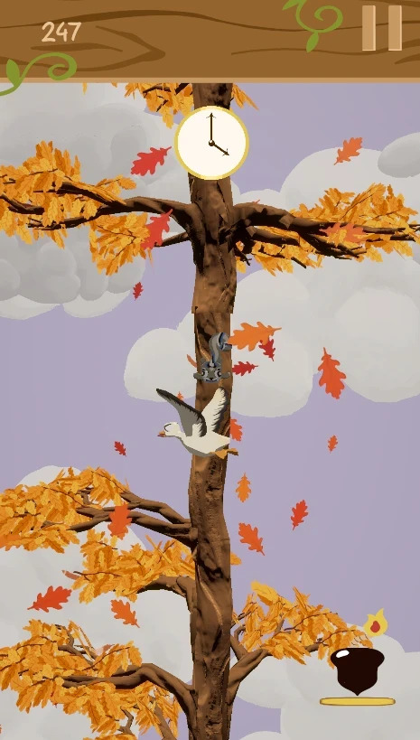
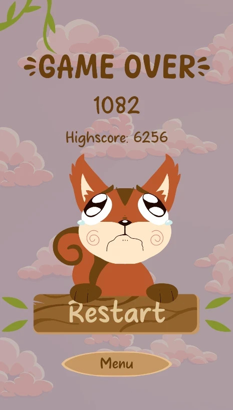
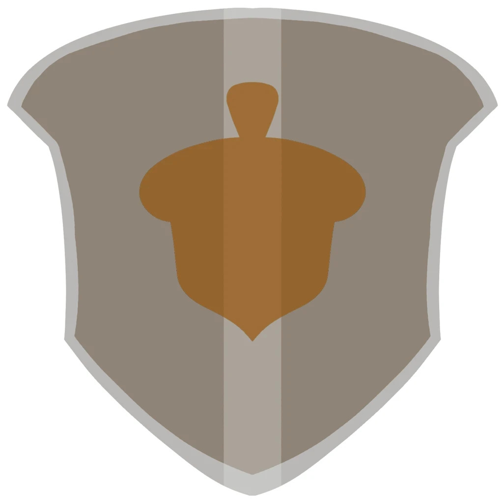
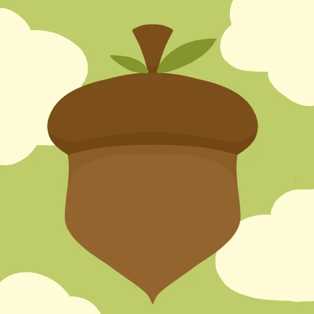

Eekhoorn versus Acorn
Eekhoorn versus Acorn (eekhoorn being the dutch word for squirrel), was my second group project game, where we had to make a mobile game. We chose to make an infinite scroller type of game. For this group project, I did all the UI (User interface). I did research on how mobile game UI looks, what works and what doesn't work.
I also drew all the UI assets by hand, so that the artists could focus on the 3D assets, which were also very prominent in the game. Here are some of the assets I drew, and what they were for!

In-game UI
This is what the screen looks like when you play the game. All the 2D assets were made by me!
Since the game takes place in a forest, I went for a bit of a wooden look, while also keeping it simple and lineless, which is the style that mobile games usually tend to go for nowadays.

Game over screen UI
This is what the game over screen looks like. Since the game is an infinite scroller and not actually finishable by default, this is a screen everyone playing our game will encounter. That's why it needed to be enticing enough for the player to press that restart button.
I drew our main character, the squirrel, looking very distraught and sad. People loved this screen a lot, and it made them want to play again!

Power-ups
Naturally, our game also has power-ups. This is one of them, which is a shield that grants you protection for the next time you hit a goose.
I had the pleasure of animating these in-game as well, which is something you can see if you play the game!

App icon
With this being a mobile game, there was also an icon for the game made to display as an app icon.
It was my task to keep this simple, but still recognizable, which is why I used the re-occuring acorn shape that has been used on things like the shield, giving it our own branded flair.
I learned a lot during this group project! I had a wonderful team, and we made a game which I am very much proud of. It's genuinely fun and enjoyable, and let me design for a different kind of audience than I am used to.
Want to play the game for yourself? Check out